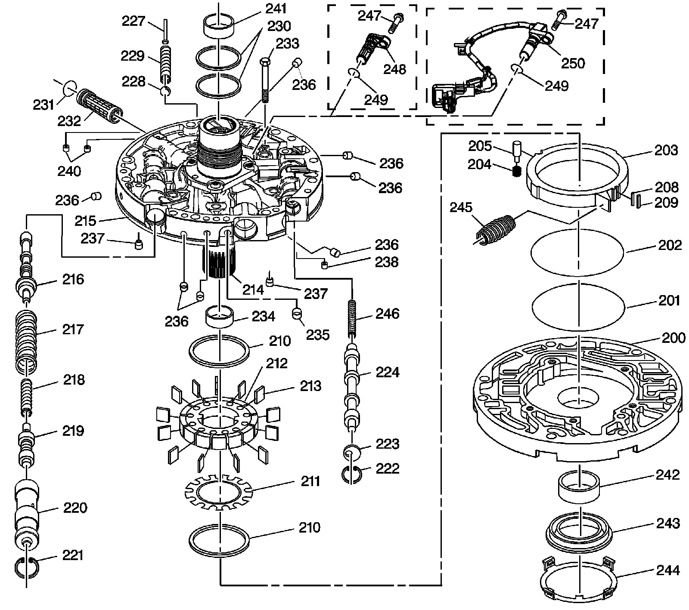

Oil Pump Assembly
Disassembled Views
Oil Pump Assembly:

200 - Pump Body
201 - Oil Seal Ring - Slide to Wear Plate
202 - O-Ring Seal - Slide Seal Back-Up
203 - Pump Slide
204 - Pivot Pin Spring
205 - Pivot Slide Pin
208 - Pump Slide Seal Support
209 - Pump Slide Seal
210 - Pump Vane Ring
210 - Pump Vane Ring
211 - Rotor Guide
212 - Oil Pump Rotor
213 - Pump Vane
214 - Stator Shaft
215 - Pump Cover
216 - Pressure Regulator Valve
217 - Pressure Regulator Valve Spring
218 - Pressure Regulator Isolator Spring
219 - Reverse Boost Valve
220 - Reverse Boost Valve Sleeve
221 - Oil Pump Reverse Boost Valve Retaining Ring
222 - Oil Pump Converter Clutch Valve Retaining Ring
223 - Stop Valve
224 - Converter Clutch Valve - Model Dependent
227 - Pressure Relief Bolt Rivet
228 - Pressure Relief Ball
229 - Pressure Relief Spring
230 - Oil Seal Ring - Stator Shaft
231 - Oil Pump Cover Screen Seal
232 - Oil Pump Cover Screen
233 - Bolt M8 X 1.25 X 40 - Cover to Body
234 - Stator Shaft Bushing - Front
235 - Oil Pump Cover Plug - FWD Clutch Feed
236 - Oil Pump Cover Plug
236 - Oil Pump Cover Plug
236 - Oil Pump Cover Plug
236 - Oil Pump Cover Plug
236 - Oil Pump Cover Plug
236 - Oil Pump Cover Plug
237 - Check Valve Retainer and Ball Assembly
237 - Check Valve Retainer and Ball Assembly
238 - Converter Clutch Signal Orifice - Cup Plug
240 - Cup Orifice Plug
241 - Stator Shaft Bushing - Rear
242 - Pump Body Bushing
243 - Oil Seal Assembly
244 - Fluid Seal Retainer
245 - A/T Fluid Pump Slide Outer Spring
246 - Converter Clutch Valve Spring
247 - A/T ISS Attaching Bolt - Model Dependent
248 - A/T ISS Hole Plug - Model Dependent
249 - O-ring - Model Dependent
249 - O-ring - Model Dependent
250 - A/T Input Speed Sensor (ISS) Assembly - Model Dependent